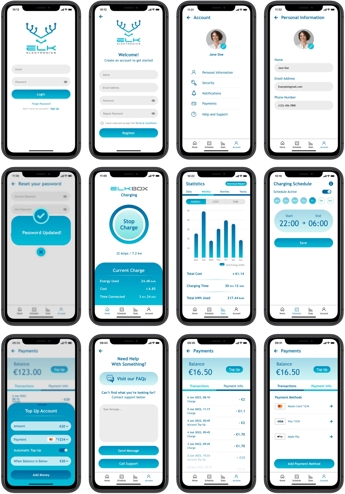

Optimized Car Charging
Redesigning Elk Electronics' EV charging app for clarity and seamless at-home use
Role:
UX/UI Designer
Timeline:
May - August 2022 (12 weeks)
Skills:
- User Research
- User Flows
- UI Design
- Interaction Design
- Visual Design
- Branding
Tools:
- Figma
- Miro
- Photoshop
- Google Drive
Overview
Reimagining EV charging for everyday use
As Elk Electronics' summer design intern, I led the redesign of our mobile charging app, refreshed our public website, and developed a new suite of branded docs. This project was an opportunity to make at-home EV charging simple and inviting for users while balancing technical constraints unique to our hardware. My focus was to unify user flow, visual identity, and accessibility into one experience for both new and existing customers.
The Problem: Bridging limitations and user expectations
With their charger, real-time battery percentage was not available during charging sessions. This limitation frustrated our existing users. Other EV apps set high expectations for live data and granular control. Our challenge was how to streamline the charging experience while keeping users confident and informed despite hardware constraints.
Research & Vision
Stakeholder and competitor deep-dive
I began by meeting with Elk Electronics' founders and developer to clarify business goals and user pain points. I conducted a rapid scan of competing EV apps, benchmarking their UI conventions and feature sets. This process revealed two main needs: a clean, accessible control flow and a brand identity that signals their quality. I translated our shared vision into a detailed style guide including colors, typography, and graphic standards. This set the stage for cohesive design across our product ecosystem.
Mapping & Wireframing
User flow as the foundation
I mapped end-to-end user flows in Miro, outlining every core interaction from session start to completion. My goal was to make the essential actions easy to find and the next step always clear. With these flows in place, I sketched low- and mid-fidelity wireframes, testing alternatives with the team.
A pivotal design decision came from hardware feedback. Instead of granular battery data, the main interface featured a "Start Charge" button that changed to "Stop Charge" once active. This choice removed confusion and focused on clarity.
Bringing brand and flow together
After finalizing the style guide and mid-fidelity wireframes, I moved into high-fidelity wireframing in Figma. Each screen layered Elk Electronics' brand gradients over clean, accessible layouts. Key interface choices like light backgrounds and strong contrast boosted readability across devices. Weekly check-ins with engineers ensured every visual fit our technical reality. The result was a flow that felt unified, modern, and unmistakably their brand.
Iteration & Micro-Interactions
Refining pop-ups for everyday use
After the initial prototype, my team identified the need for informative pop-ups such as charging status and error messages. I designed these overlays with clear icons and exit controls. This made it easy for users to dismiss notifications and stay focused on charging.
Outcomes
Clearer, faster charging and cohesive brand
By project end, Elk had a unified app flow and style across mobile and web. This change made at-home charging simpler and more accessible. Internal testers reported less confusion and fewer support requests. The modular system I designed now forms the baseline for future product enhancements and brand collateral.
Reflection
Designing with constraint is creative
Working with hardware limits challenged me to focus design energy on clarity and simplicity. Establishing a style guide early made team communication smoother and reinforced our vision through every iteration. I would have liked to conduct richer user feedback and external testing in future cycles. This internship strengthened my belief that accessible design drives user trust and brand loyalty.